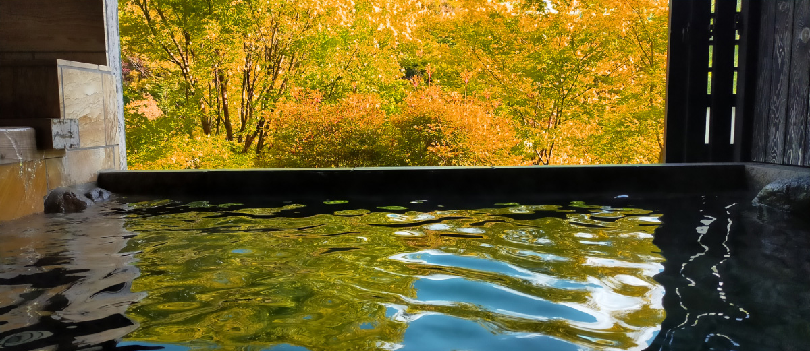
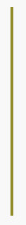
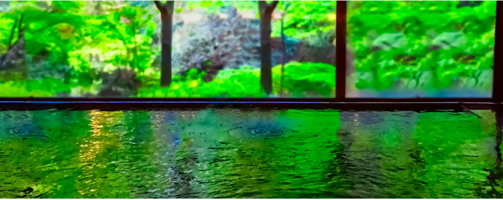
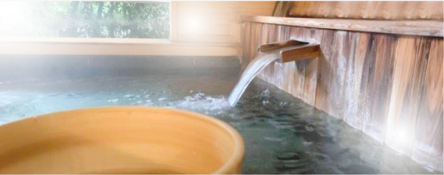

温泉

温泉の泉質・効能
鬼怒川温泉はいまから300年以上も昔の江戸時代・元禄4年（1691年）に
発見されました。当時は日光神領であったため、日光詣をした大名や僧侶たち
だけが利用していたといいます。
泉質はアルカリ性単純温泉。無色透明、無味無臭の肌にやさしい温泉です。
近代になって神経痛やリウマチに効く温泉として「滝の湯」の名で親しまれ、
昭和2年に鉄道が開通するや鬼怒川温泉として発展してきました。
【泉質】アルカリ性単純温泉 【効能】神経痛・くじき・筋肉痛・関節痛など


大浴場
広々とした浴室で心と体を
解放させるひととき。
露天風呂
新緑や紅葉にかこまれ
疲れを癒す森林浴。

客室風呂
自分だけの温泉を楽しむ
至福の時間。